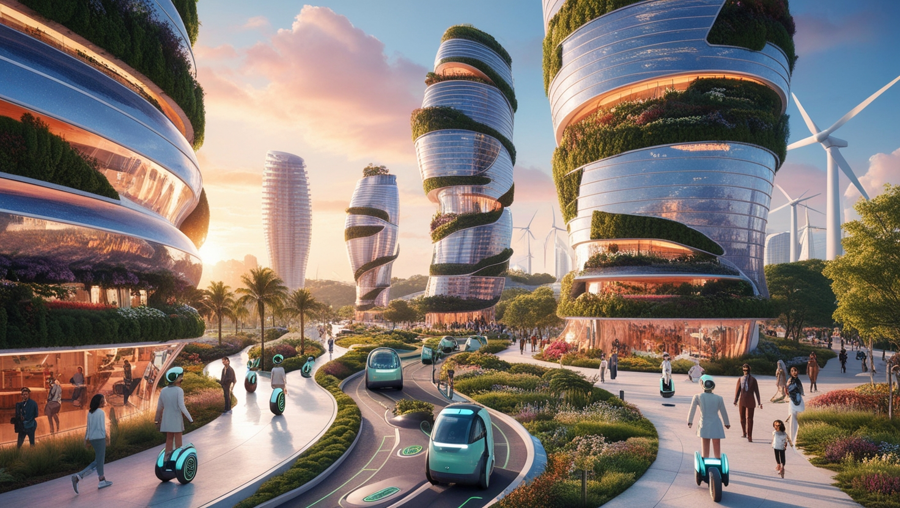
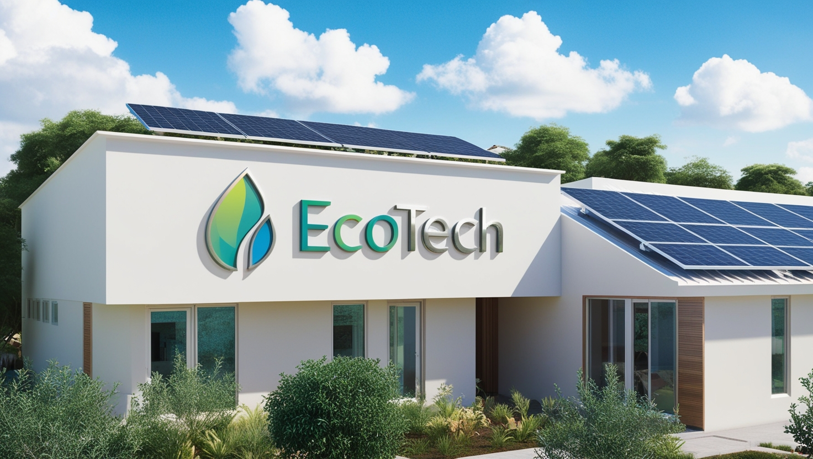
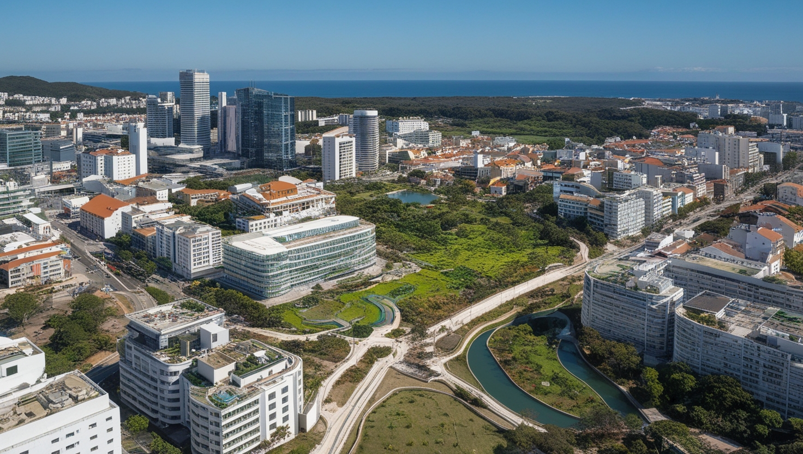

Cidades Verdes: Vidas Melhores
As cidades sustentáveis estão se destacando como modelos de urbanização consciente, onde o equilíbrio entre desenvolvimento e preservação do meio ambiente é prioridade.
Algumas metrópoles estão adotando políticas públicas inovadoras, investindo em tecnologias verdes e promovendo iniciativas comunitárias que visam transformar a vida urbana.
Essas cidades estão na vanguarda da criação de ambientes mais saudáveis e resilientes, oferecendo soluções práticas que podem ser replicadas em todo o mundo para um futuro urbano mais sustentável.
Habitação Acessível
A Habitação Acessível é um direito fundamental que deve estar ao alcance de todos, independentemente de sua condição econômica.
Projetos sociais e políticas habitacionais têm transformado vidas ao redor do mundo, além de destacar o papel vital das ONGs e dos governos na promoção de iniciativas que visam eliminar o déficit habitacional e proporcionar um lar seguro e confortável para todas as pessoas.
Impacto Ambiental
O impacto ambiental causado pela urbanização desenfreada é uma das maiores preocupações no mundo moderno.
A expansão das cidades e as práticas de construção afetam o meio ambiente, contribuindo para problemas como a poluição do ar e da água, a perda de biodiversidade, e a redução de áreas verdes essenciais para a qualidade de vida urbana.
Além de discutir os desafios, soluções inovadoras que estão sendo adotadas para minimizar esses impactos, como o uso de tecnologias sustentáveis na construção civil, a criação de corredores ecológicos, e o planejamento urbano consciente que integra a natureza ao ambiente urbano.
Ação e Participação.
Existem diversas maneiras de se envolver, seja participando de eventos locais relacionados ao Dia Mundial do Habitat, oferecendo seu tempo em projetos de voluntariado, ou até mesmo apoiando iniciativas globais que promovem a urbanização sustentável e a habitação digna para todos.